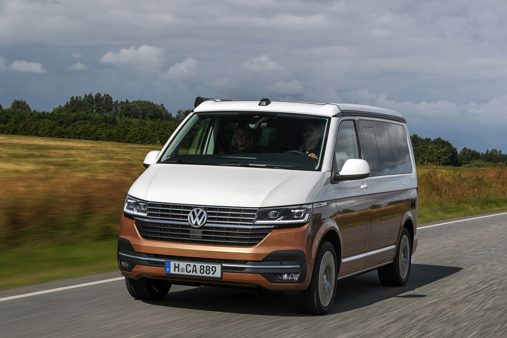

EXTERIOR
Estéticamente la California Ocean 6.1 se distingue de su predecesora por una parrilla rediseñada, nuevas luces LED de marcha diurna, una entrada de aire más generosa o detalles cromados (exclusivos de la versión) como los listones decorativos de la parrilla y del paragolpes.
